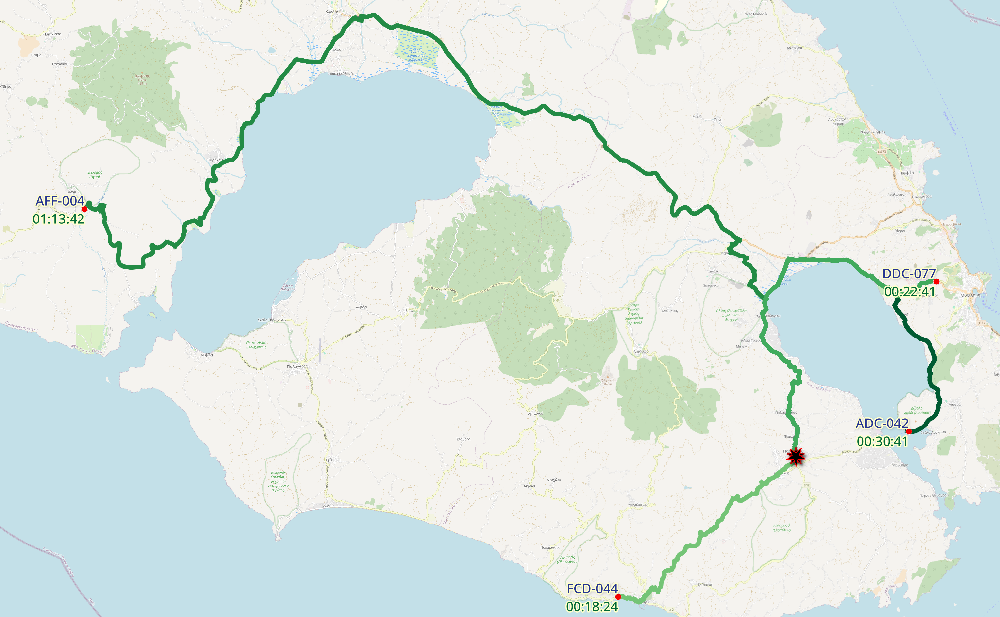

10 Finding the closest vehicle
As a user I want to:
- be able to know which available vehicles can arrive fast in an emergency
So that:
- I can decide which vehicles to assign to it
Because:
- I need to respond fast to an emergency
Problem definitions
- A vehicle’s response time is based on the time it would take under normal conditions to arrive from its current location to the emergency’s location
- All vehicles are currently on a road, not parked to the side or in someone’s parking lot
10.1 Routing
Using similar approaches as in the previous chapters, we can possibly generate the results using some advanced plpgsql. The PostgreSQL ecosystem is rich with extension that frequently enough solve our problems out of the box. Such is the case of pgrouting.
Pgrouting, among others, implements Dijkstra’s shortest path algorithm. We can use that adding speed limits to find the fastest path.
10.1.1 Installation population and clean up
We have already prepared the database to accept the extension during the setup phase. So now we simply have to create the extension and the schema where the data will live:
CREATE EXTENSION IF NOT EXISTS pgrouting;
CREATE SCHEMA IF NOT EXISTS osm_routing_data;The ways table looks like that:
Result
\d osm_routing_data.ways;
Table "osm_routing_data.ways"
Column | Type | Collation | Nullable | Default
-------------------+---------------------------+-----------+----------+----------------------------------------------------
gid | bigint | | not null | nextval('osm_routing_data.ways_gid_seq'::regclass)
osm_id | bigint | | |
tag_id | integer | | |
length | double precision | | |
length_m | double precision | | |
name | text | | |
source | bigint | | |
target | bigint | | |
source_osm | bigint | | |
target_osm | bigint | | |
cost | double precision | | |
reverse_cost | double precision | | |
cost_s | double precision | | |
reverse_cost_s | double precision | | |
rule | text | | |
one_way | integer | | |
oneway | text | | |
x1 | double precision | | |
y1 | double precision | | |
x2 | double precision | | |
y2 | double precision | | |
maxspeed_forward | double precision | | |
maxspeed_backward | double precision | | |
priority | double precision | | | 1
the_geom | geometry(LineString,2100) | | |
Indexes:
"ways_pkey" PRIMARY KEY, btree (gid)
"ways_the_geom_idx" gist (the_geom)
Foreign-key constraints:
"ways_source_fkey" FOREIGN KEY (source) REFERENCES osm_routing_data.ways_vertices_pgr(id)
"ways_source_osm_fkey" FOREIGN KEY (source_osm) REFERENCES osm_routing_data.ways_vertices_pgr(osm_id)
"ways_tag_id_fkey" FOREIGN KEY (tag_id) REFERENCES osm_routing_data.configuration(tag_id)
"ways_target_fkey" FOREIGN KEY (target) REFERENCES osm_routing_data.ways_vertices_pgr(id)
"ways_target_osm_fkey" FOREIGN KEY (target_osm) REFERENCES osm_routing_data.ways_vertices_pgr(osm_id)Here we see an example of when enum type should have been used, and was not.
SELECT one_way, oneway FROM osm_routing_data.ways GROUP BY 1, 2;
one_way | oneway
---------+---------
0 | UNKNOWN
1 | YES
2 | NO
(3 rows)To load OpenStreetMap data in pgrouting format, use the osm2pgrouting.
osm2pgrouting \
--file osmdata/Lesbos.osm \
--schema osm_routing_data \
--clean \
--dbname emergency_vehicles_lesbos
--username georgiosChange the geometry to use the appropriate SRID for the project.
ALTER TABLE
osm_routing_data.ways
ALTER COLUMN
the_geom
TYPE
geometry(LineString,2100)
USING
ST_Transform(the_geom,2100);
ALTER TABLE
osm_routing_data.ways_vertices_pgr
ALTER COLUMN
the_geom
TYPE
geometry(Point,2100)
USING
ST_Transform(the_geom,2100);And make certain that you remove excess as seen earlier.
The extension provides several functions to solve most of your routing needs. Here we will briefly explore one version using Dijkstra’s famous algorithm. The provided function takes four arguments: one query for selecting the parameters of the algorithm, the initial vertex, the destination vertex, and wether the routing would be directional (i.e. respect one way path).
Here is an example query returning the cost per segment, and aggregated cost, in seconds:
Example
SELECT
pgr_dijkstra(
'
SELECT
gid AS id,
source,
target,
cost_s AS cost,
reverse_cost_s AS reverse_cost
FROM
osm_routing_data.ways
',
21897, -- Starting vertex id
36349, -- Destination vertex id
directed := true
);
seq | path_seq | start_vid | end_vid | node | edge | cost | agg_cost
-----+----------+-----------+---------+-------+-------+--------------------+--------------------
1 | 1 | 21897 | 36349 | 21897 | 26300 | 94.84905490766265 | 0
2 | 2 | 21897 | 36349 | 23966 | 18760 | 3.2731262086717416 | 94.84905490766265
3 | 3 | 21897 | 36349 | 16641 | 51997 | 4.640686932423238 | 98.12218111633439
4 | 4 | 21897 | 36349 | 36004 | 52444 | 13.349811557993045 | 102.76286804875762
5 | 5 | 21897 | 36349 | 36349 | -1 | 0 | 116.11267960675067
(5 rows)10.2 Approximate response time in an emergency
As a application I want to:
- be able to add to get the estimated ETA of each available vehicle in an emergency
So that:
- I can assign vehicles to an emergency
Because:
- ETA is a crucial in many emergencies
Implementation
CREATE OR REPLACE FUNCTION v1_0_0.available_eta(emergency_vid INTEGER)
RETURNS TABLE (
fleet_id VARCHAR(8),
"ETA" DOUBLE PRECISION,
"human readable ETA" VARCHAR(8)
) AS
$$
WITH available AS (
SELECT
*
FROM
v1_0_0.vehicle_latest_info
WHERE
state = 'on duty'
), osm_ids AS (
SELECT
available.fleet_id,
available.location,
nearest.id AS node_id
FROM
available
JOIN LATERAL (
SELECT
vertex.id
FROM
osm_routing_data.ways_vertices_pgr vertex
ORDER BY
vertex.the_geom <-> available.location
LIMIT 1
) AS nearest ON
true
), dijkstra AS (
SELECT
*
FROM
pgr_dijkstra(
'
SELECT
gid AS id,
source,
target,
cost_s AS cost,
reverse_cost_s AS reverse_cost
FROM
osm_routing_data.ways
',
(SELECT ARRAY_AGG(node_id) FROM osm_ids), -- Available vehicle's vertices
emergency_vid, -- Emergency vertex
directed := true
)
)
SELECT
osm_ids.fleet_id,
MAX(dijkstra.agg_cost) AS ETA,
TO_CHAR((MAX(dijkstra.agg_cost) || ' second')::interval, 'HH24:MI:SS') AS "human readable ETA"
FROM
dijkstra
JOIN
osm_ids ON
dijkstra.start_vid = osm_ids.node_id
GROUP BY
osm_ids.fleet_id
ORDER BY
ETA ASC
$$
LANGUAGE sql;And an example of execution
SELECT * FROM v1_0_0.available_eta(14001);
fleet_id | ETA | human readable ETA
----------+--------------------+--------------------
FCD-044 | 1094.071256639637 | 00:18:14
DDC-077 | 1361.4450670441684 | 00:22:41
ADC-042 | 1841.7158340963542 | 00:30:41
AFF-004 | 4422.215905488992 | 01:13:42
(4 rows)Of course we can join the output of pgr_dijkstra with the ways table to draw the paths.
